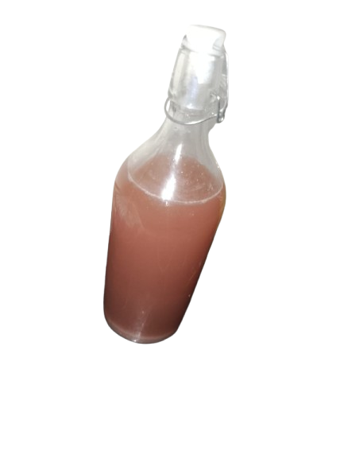
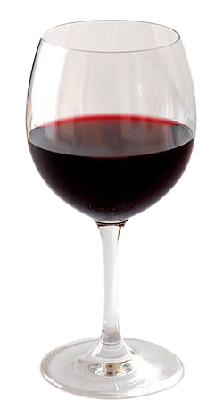
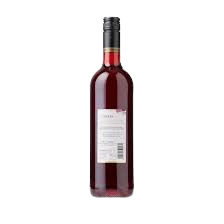
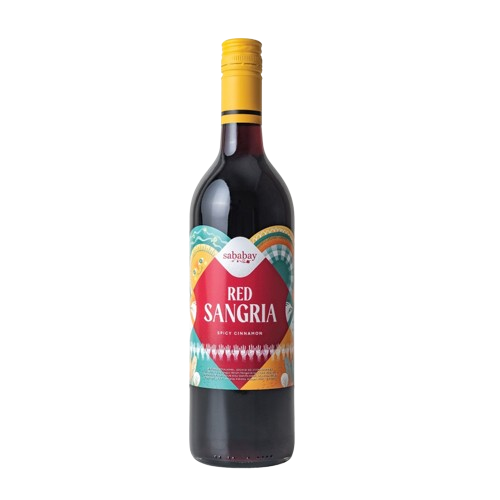
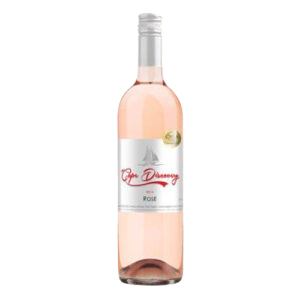
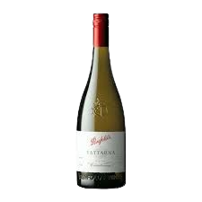
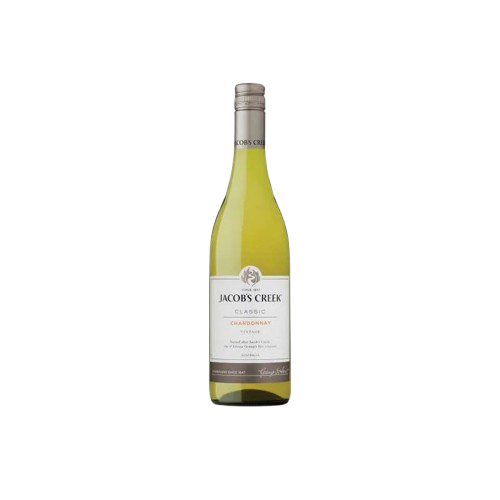

Iwakuni berasal dari bahasa jepang yang ditranslate ke bahasa inggris menjadi White Snake, lalu di translate lagi ke indonesia menjadi ular putih. Ini melambangkan ular yang haus akan darah (warna Merah) dan putih yang melambangkan warna dari White Wine yang dibuat dengan Anggur hijau. Lalu "Rosso" yang berarti merah dan "Verde" yang berarti hijau.
Hasil dari bioteknologi yang telah kita buat sangat memuaskan. Kita berhasil membuat wine anggur tanpa peralatan professional sama sekali. Disini wine yang telah dibuat, sudah dicoba organoleptik (rasa) oleh 10 orang, dengan begitu kita bisa mengetahui kualitas wine yang telah dibuat oleh kami.
Bahan-bahan dan alat yang diperlukan untuk membuat sebuah produk wine adalah, Ragi/yeast saccharomyces cerevisae, Air 500ml, galon plastik sendok, blender, saringan/kain, serta gula yang banyak.





